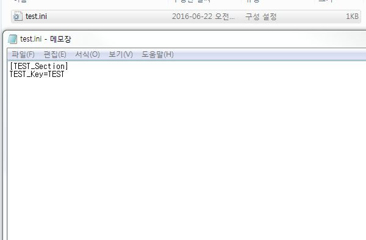
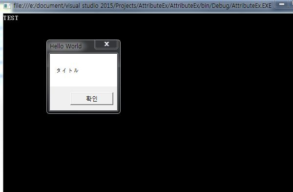
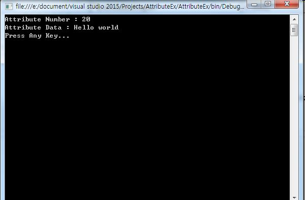

こんにちは。明月です。
今日は(Attribute)アトリビュートについて勉強します。C#のAttribute(アトリビュート)はJavaのアノテーションと同じ意味のキーワードです。クラスあるいはメソッドを実装する場合に必要な情報と特性を定義することの意味です。
そうすればC#から基本的に提供するAttribute(アトリビュート)とユーザーが作成して使う仕方について勉強してみましょう。
Attribute(アトリビュート)
| Attribute | 説明 |
|---|---|
| CLSCompliant | アセンブリのすべての型をCLSに合わせて使用 |
| Obsolete | 使用しないと要素を表す。 |
| Conditional | 全処理機を識別子によって実行する可否を決定 |
| DllImport | 非管理コードの形態で実行するメソッドを表す。 |
| Dispid | COMのDISpatchのIDを表す。 |
| Serializable | クラスあるいは構造体がシリアルライズにするのを表す。 |
| Transaction | トランザクションを無視になるか支援できるかを表す。 |
筆者も上の表の中で「DllImport」、「Serializable」、「Transaction」を使ったことがありあます。「DLLImport」の場合は「C」と「C++」あるいは「Win Com+」のDllライブラリファイルをC#にインポートするようにするアトリビュートです。
using System;
using System.Collections.Generic;
using System.Linq;
using System.Text;
using System.Threading.Tasks;
using System.Runtime.InteropServices;
namespace AttributeEx
{
class Program
{
//Com+のウィンドウメッセージアラム
[DllImport("User32.dll")]
public static extern int MessageBox(int hWnd, string lpText, String lpCaption, int uType);
//Com+のIni環境ファイル作成
[DllImport("kernel32")]
private static extern long WritePrivateProfileString(string section, string key, string val, string filePath);
//Com+の環境ファイル読込
[DllImport("kernel32")]
private static extern int GetPrivateProfileString(string section, string key, string def, StringBuilder retVal, int size, string filePath);
static void Main(string[] args)
{
//ini作成
WritePrivateProfileString("TEST_Section", "TEST_Key", "TEST", "d:\\test.ini");
//ini読込
StringBuilder buffer = new StringBuilder();
GetPrivateProfileString("TEST_Section", "TEST_Key", "", buffer, 256, "d:\\test.ini");
Console.WriteLine(buffer.ToString());
//DllImportしたメソッドを呼出す。
MessageBox(0, "タイトル", "Hello World", 0);
Console.WriteLine("Press Any Key...");
Console.ReadLine();
}
}
}
上の例は「DllImport」のアトリビュートでCom+ Dllライブラリを参照して使うものです。
「WritePrivateProfileString」と「GetPrivateProfileString」の場合は「C++」、「MFC」で開発したことがある方ならしてると思いますが、「Ini」環境ファイルを読み込むまたは書き込むような関数です。Windowの中で組込のメソッドですね。「MessageBox」の場合も旧Windowのメッセージの組込のメソッドです。


ここまで、C#から提供するアトリビュートを使う方法を勉強しました。
表としてはたくさんありますが、筆者も使ったことがないし、実際に「DllImport」以外のアトリビュートは使わないのでここまで勉強します。
これからはユーザーがアトリビュートを作成して使う方法を勉強します。
using System;
using System.Collections.Generic;
using System.Linq;
using System.Text;
using System.Threading.Tasks;
using System.Runtime.InteropServices;
namespace AttributeEx
{
//アトリビュートの宣言タイプ
//[AttributeUsage(AttributeTargets.All)]
//[AttributeUsage(AttributeTargets.Class)]
[AttributeUsage(AttributeTargets.Method)]
class AttributeExam : Attribute
{
//プロパティ
public int Number
{
get;
set;
}
public String Data
{
get;
set;
}
//コンストラクタ
public AttributeExam(int number)
{
this.Number = number;
}
}
class Program
{
[AttributeExam(20,Data = "Hello world")]
public void Print()
{
//Printメソッドからアトリビュートを取得
object[] attrs = this.GetType().GetMethod("Print").GetCustomAttributes(false);
AttributeExam attribute = null;
foreach(object attr in attrs)
{
if (typeof(AttributeExam).Equals(attr.GetType()))
{
attribute = attr as AttributeExam;
break;
}
}
if(attribute == null)
{
Console.WriteLine("Not Attribute!!");
return;
}
//アトリビュートの値を出力
Console.WriteLine("Attribute Number : " + attribute.Number + "\r\nAttribute Data : " + attribute.Data);
}
static void Main(string[] args)
{
Program p = new Program();
p.Print();
Console.WriteLine("Press Any Key...");
Console.ReadLine();
}
}
}

まず、アトリビュートを「Attribute」クラスから継承して作成します。ここで「AttributeUsage」のアトリビュートで「AttributeExam」のクラスはどのタイプのアトリビュートかを明示します。
「AttributeExam」の形態はクラス型なので、メンバ変数、プロパティ、メソッド、イベント等を作成できますが、アトリビュートとして使うものは「コンストラクタ」と「プロパティ」なのでメソッド、イベントは作成しません。
その後で[Program]クラスの「Print」メソッド上に「AttributeExam」のアトリビュートを宣言します。
アトリビュートは宣言だけでは何も意味がないので、ここからは「reflection」を通ってアトリビュートの値を取得します。そして、アトリビュートの値を出力します。
今まで勉強したとおりにアトリビュートはクラスやオブジェクトの意味ではなくて、実装するところでメソッドの情報の正義と特性の正義することで意味があります。
後で、フレームワーク(ORM,MVC等)を構築する時にこのアトリビュートは属性の正義、DI依存性のためオブジェクトを明示すること等の役で使っています。
OOPの高級文法を勉強するために、アトリビュートは大事なので流れはしっかり覚えていきましょう。
- [C#] Thread(スレッド)2019/07/24 00:57:35
- [C#] 「IDisposable」と「using」2019/07/23 00:05:40
- [C#] ファイルシステム(File System) - FileStream、 Encoding、 Serializable2019/07/22 23:45:05
- [C#] ファイルシステム(File System) - FileInfo,DirectoryInfo2019/07/22 23:30:17
- [C#] MSDN(Microsoft Developer Network)2019/07/22 23:15:42
- [C#] Attribute(アトリビュート)2019/07/20 02:27:23
- [C#] Reflection(リフレクション)2019/07/20 02:22:03
- [C#] Objectタイプ、varタイプ(匿名タイプ)、dynamicタイプ2019/07/18 22:50:16
- [C#] Partial Type(クラス分割)、拡張メソッド2019/07/18 20:22:16
- [C#] Lamda(ラムダ)2019/07/17 23:06:42
- [C#] LINQ(リンク)-3 (Enumerableクラス)2019/07/17 20:57:00
- [C#] LINQ(リンク)-2 (メソッド式)2019/07/16 22:40:03
- [C#] LINQ(リンク)-12019/07/16 20:41:27
- [C#] event(イベント)2019/07/16 00:59:34
- [C#] delegate(デリゲート)2019/07/16 00:48:03
- [Java] FTPに接続してファイルをダウンロード、アップロードする方法(FTPClient)2020/03/20 02:44:36
- [Window] WindowでFTPサーバを構築する方法2020/03/19 03:27:22
- [Java] JSPのSpring環境でschedulerのcronを使う方法2020/03/18 00:24:32
- [Java] POIを利用してExcelを扱う方法2020/03/17 01:48:00
- [Java] PDFを出力する方法(itextpdf)2020/03/13 00:47:31
- [Java] ログライブラリ(log4j)を使う方法2020/03/12 00:54:39
- [Java] Jsonタイプのデータを使う方法(Gsonライブラリ)2020/03/11 00:30:15
- [Java] Base64にエンコード、デコードする方法2020/03/09 10:24:01
- [Java] cmdコマンドを実行するための方法2020/03/06 18:01:10
- [Java] メール(javax.mail)を発送する方法2020/03/05 20:07:49
- [Java] クラス複製(Clonable, Reflection)2020/03/05 00:03:19
- [Java] シリアライズ(直列化: Serializable)2020/03/03 00:03:33
- [Java] StringBuilderとStringBufferの差異2020/03/02 07:52:22
- [Java] Compare関数を使う方法2020/02/29 03:00:00
- [Java] 数字フォーマット(お金表示及び小数点以下表示)2020/02/28 03:00:00